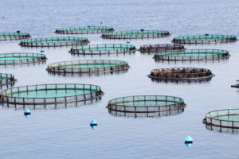
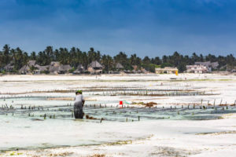
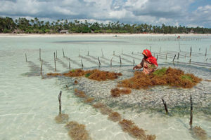
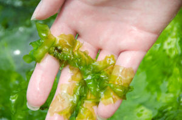
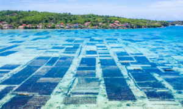
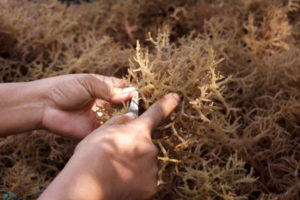
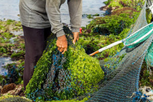

A. Manfaat dan Keuntungan
Budidaya Rumput Laut
Kebutuhan rumput laut semakin meningkat seiring berjalannya waktu. Mulai untuk memenuhi kebutuhan dalam negeri hingga luar negeri. Berdasarkan data dari Kementerian Perikanan dan Kelautan, 99,73% rumput laut yang dihasilkan oleh para petani merupakan hasil dari budidaya sendiri. Hal tersebut terjadi karena faktor lokasi Indonesia yang dikelilingi oleh lautan. Sehingga memberikan potensi bisnis kelautan dan perikanan yang lebih tinggi.
Selain kebutuhan pasar yang terus meningkat, keuntungan budidaya rumput laut lainnya yang bisa dirasakan oleh masyarakat yaitu penyerapan tenaga kerja. Budidaya rumput laut tidak sesulit pekerjaan para nelayan dalam mencari tangkapan, dimana nelayan sendiri lebih banyak dilakukan oleh kaum pria. Berbeda dengan budidaya rumput laut, yang bisa dilakukan oleh semua kalangan, baik tua atau muda, laki-laki ataupun perempuan.
Anda tidak perlu susah berlayar ke tengah laut dan menggunakan banyak tenaga untuk mengumpulkan rumput laut. Anda hanya cukup mempelajari bagaimana cara budidaya rumput laut yang benar.
B. Tahapan Budidaya Rumput Laut
Meski bisa dilakukan oleh semua orang, budidaya rumput laut tetap memiliki cara khusus. Terdapat beberapa cara atau tahapan budidaya rumput laut yang akan penulis jelaskan di bawah ini
1. Pemilihan Lokasi Budidaya 
Sebelum melakukan budidaya rumput laut. Ada beberapa hal yang perlu Anda perhatikan sebelum memilih lahan yang akan menjadi tempat budidaya.
( Pilihlah lokasi dengan karakter air yang tenang )
( Kedalaman air harus kurang dari 70 cm ketika air laut surut, dan tidak lebih dari 200 cm saat air laut pasang )
( Pastikan lokasi yang Anda pilih terlindung dari angin laut yang kencang )
(Lokasi yang digunakan harus berada di tempat lumpur dan sedikit berpasir )
( Saluran irigasi di lokasi tersebut harus lancar )
Apabila lokasi rumah Anda berada di dekat pesisir atau pinggir pantai. Maka hal tersebut akan sangat menguntungkan bagi Anda. Sebab akan memudahkan Anda dalam proses budidaya
2. Uji Lokasi Budidaya Rumput Laut 
Sesudah memilih lokasi budidaya, hal selanjutnya yang harus Anda lakukan yaitu menguji kelayakan lokasi tersebut dengan cara menanam rumput laut. Tahap ini penting karena dapat membuktikan apakah lokasi tersebut layak dijadikan lahan budidaya atau tidak. Hal tersebut bertujuan agar mengurangi risiko kerugian saat proses budidaya. Anda bisa menguji lokasi tersebut dengan metode jaring atau tali.
Untuk menguji tanaman dengan metode jaring, Anda bisa menggunakan tali monofilament dengan ukuran 5mx2,5m yang diikat di tiang pancang. Sedangkan uji coba dengan metode tali, Anda bisa menggunakan tali monofilament yang dikaitkan di dua tiang pancang. Kedua tiang tersebut harus berjarak kurang lebih 10 sampai 12 meter.
3. Pilih Metode Budidaya Rumput Laut yang Sesuai 
Terdapat tiga metode yang bisa Anda pilih dalam melakukan proses budidaya rumput laut. Pemilihan metode dapat disesuaikan dengan posisi rumput laut dan dasar perairan. Berikut adalah beberapa metode yang bisa Anda pilih.
a. Metode Dasar
Metode ini adalah metode budidaya rumput laut yang dilakukan dengan menggunakan bibit rumput laut yang diikat dn disebar di dasar perairan. Metode dasar ini juga dapat dilakukan dengan cara menebar benih yang diikat di sekitar batu karang.
b. Metode Apung
Metode apung adalah salah satu pendekatan rekayasa dari metode lepas dasar di area tengah laut. Jika Anda ingin menggunakan metode ini, maka Anda harus menggunakan pelampung di bagian permukaan laut. Ada dua jenis metode apung yang bisa Anda coba, yaitu metode jaring apung dan taling apung.
c. Metode Lepas Dasar
Metode yang terakhir adalah metode lepas dasar. Dimana metode ini adalah jenis budidaya yang dilakukan dengan mengikatkan benih pada tali nilon. Metode ini juga terbagi menjadi beberapa jenis, mulai dari metode tunggal lepas dasar, jaring lepas dasar, dan jaring lepas yang berbentuk tabung
4. Pemilihan Bibit Rumput Laut 
Tahap selanjut setelah pemilihan lokasi adalah pemilihan bibit rumput laut. Tahap ini dilakukan dengan cara mengumpulkan bibit rumput laut yang diperoleh dari lautan. Proses pengumpulan bibit bisa Anda lakukan dengan beberapa cara.
Bisa dengan penyebaran spontan atau diletakkan di bawah sinar matahari. Adapun cara pengumpulan bibit rumput laut lainnya yaitu dengan merendamnya dengan air laut yang memiliki konsentrasi 1,030 g/m3 selama 25 menit.
Guna mempermudah pemilihan bibit, Anda perlu memahami ciri-ciri bibit unggul yang patut Anda pilih. Berikut adalah beberapa ciri bibit unggul yang harus Anda ketahui.
Berwarna cerah
Tidak mengelupas
Tidak ada cacat atau bercak
Mempunyai banyak cabang
Dikumpulkan dari lokasi perairan
Rumput laut dijumpai tumbuh didaerah perairan yang dangkal (intertidal dan sublitoral), dengan kondisi dasar perairan berpasir sedikit lumpur atau campuran keduanya. Rumput laut bersifat benthik dan hidup sebagai fitobentos yang thalusnya melekat pada substrat pasir, lumpur berpasir, karang, fragmen karang mati, kulit kerang, batu atau kayu.
Perkembang biakannya dapat terjadi melalui dua cara yaitu secara vegetatif dan generatif. Pertumbuhan dan penyebaran rumput laut seperti halnya biota lainnya sangat dipengaruhi oleh toleransi fisiologi dari biota tersebut terhadap faktor-faktor lingkungan (eksternal), seperti substrat, salinitas, temperatur, intensitas cahaya, tekanan dan nutrisi.
5. Tips Menanam Benih Rumput Laut 
Ketika mengangkut benih rumput laut untuk ditanam, maka rumput laut sebaiknya terendam oleh air laut. Oleh sebab itu, Anda perlu menggunakan styrofoam untuk mengangkat benih dari habitatnya. Kemudian susun rumput secara berlapis dan berselang.Beri lapisan kain yang telah dibasahi dengan air laut. Ada beberapa cara menanam rumput laut yang bisa Anda terapkan, yaitu:
( Siapkan sebuah tali untuk menggantung benih rumput laut, kemudian ikat di tali yang menggantung )
( Panjangkan tali yang berisikan ikatan rumput laut, lalu posisikan 30 cm di atas permukaan air )
( Jarak ideal untuk rentang tali yaitu berkisar antara 20 cm sampai 30 cm )
6. Perawatan Rumput Laut 
Supaya pertumbuhan rumput laut semakin lancar. Serta proses pemanenan yang jauh dari masalah. Anda perlu mempelajari cara merawat rumput laut dengan benar. Sebab, hasil panen akan ditentukan di tahap ini.
Sehingga proses perawatan juga perlu diperhatikan guna mendapatkan hasil panen yang unggul dan berkualitas. Berikut ini, penulis akan jelaskan beberapa tips merawat rumput laut yang baik dan benar.
( Rutin bersihkan talus rumput laut dari hama yang hidup di sekitar lokasi budidaya )
( Hama yang biasanya akan muncul pada budidaya rumput laut adalah bulu babi, teripang, larva, dan ikan herbivora )
( Pastikan bahwa sinar matahari bisa masuk ke dalam perairan )
( Rutin periksa rumput laut dari berbagai penyakit )
Terlebih untuk Anda yang melakukan budidaya rumput laut di pesisir pantai. Anda tentu harus ekstra tenaga untuk merawat rumput laut yang telah dikembangkan. Sebab, dengan melakukan budidaya di pantai berarti akan ada banyak organisme lain yang akan muncul dan berdampak pada pertumbuhan rumput laut.
7. Tahapan Panen Rumput Laut 
Setelah melewati beberapa tahapan budidaya yang cukup panjang, di tahap akhir yang perlu Anda lakukan adalah memanennya. Waktu panen pun harus disesuaikan dengan cara serta proses budidaya yang akan dilakukan.
Jika tujuan panen Anda adalah pembibitan. Maka Anda perlu memanen rumput laut di usia 25 hingga 35 hari. Sedangkan jika Anda ingin memanen untuk kepentingan bisnis atau memberi hasil olahan. Maka Anda perlu memanennya di umur 45 hari.
Proses panen bisa Anda lakukan dengan cara mengangkat seluruh tanaman dan tali pengaitnya. Apabila rumput laut sudah dipanen, Anda bisa mengeringkannya di bawah sinar matahari secara bertahap.
Proses penjemuran dilakukan selama 3 hingga 4 hari bergantung kepada kondisi cuaca. Setelah proses panen sudah selesai, maka Anda bisa menjualnya atau mengolah rumput laut menjadi kuliner yang lezat